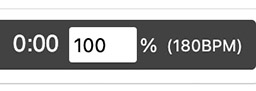

Play ABC tunes with synchronized notation and large live Comhaltas ABC note names.
Overview
Load, type, or paste ABC tunes and play them with synchronized standard music notation and live Comhaltas note names.
The Comhaltas Note Names pane displays a large note name that follows playback and note-by-note navigation.
The Comhaltas note-name tablature supports the chromatic range from G3 (G,) through B6 (B''), including sharps and flats. Notes outside this range may not display correctly in the notation note-name labels.
Opening and Selecting Tunes
Type or paste a single tune into the ABC editor, open an .abc or .txt file containing one or more tunes, or send tunes directly from ABC Transcription Tools.
For multi-tune files, use the Tune menu to select the tune to display and play. Edits are retained when changing tunes.
The ABC editor intentionally accepts only one pasted tune at a time; multi-tune collections should be opened as a file or transferred from ABC Transcription Tools.
ABC Editing and Notation
The upper-left panel contains editable ABC. The lower-left panel shows standard music notation and playback controls.
The Notation display selector switches between Notation Only, which displays standard music notation without note names, and Notation + Note Names, which adds Comhaltas note names beneath the notation. This setting is remembered in this browser.
Editing the ABC rebuilds the notation and audio. Click a rendered note to select its corresponding ABC text and show its Comhaltas note name.
The Small / Medium / Large / Largest selector changes the ABC editor text size and remembers the choice in this browser.
Click on any note head in the notation and then use ← and → below the note-name display to step through the notes without playback.
Leave Use arrow keys? checked at the lower right of the note-name panel to navigate with the Left and Right Arrow keys, or jump to the first or last note with Home or End (including compatible Bluetooth keyboard foot pedals).
This option is on by default. Your choice is remembered in this browser, including when you open a shared tune or run a lesson. Share and lesson links do not change this setting.
When enabled, unmodified Left and Right Arrow keys step through notes, and Home and End jump to the first and last notes of the tune.
These keys navigate notes instead of moving the ABC editor cursor.
Keyboard shortcuts are temporarily disabled while dialogs or controls that use these keys are active. When this option is enabled, the shortcuts also work while the ABC editor has focus.
Uncheck the option to restore normal arrow-key behavior.
Comhaltas Note Names Display
The large display shows the current pitch in Comhaltas ABC note naming, synchronized with playback and note navigation.
Check Show note to also show the current pitch as a quarter note on a staff just below the note name. The Show note setting is remembered in this browser and is not included in share links.
Note names are displayed using sharps or flats according to the tune's K: key and mode. When Show note is enabled, the notation below the note name uses the same sharp or flat naming.
Check Hide to clear the note-name display; it can be used if you want to practice a tune without seeing the note names. Uncheck Hide to reveal the display again. This setting is remembered during normal use and can be changed without saving during a lesson.
Note names always use uppercase letters and octave apostrophe marks.
Use the Octave colors select to choose With Colors (the default) or Without Colors.
With Colors displays note names in black below D5, dark red from D5 through C#6, and orange from D6 upward; Without Colors displays all note names in black.
The octave color preference is remembered in this browser and included in normal share links and lesson links.
Playback and Tempo
As each melody note plays, the notation cursor follows the tune and the Comhaltas Note Names pane updates to that note.
Playback uses MIDI program 0 (Acoustic Grand Piano) for the melody, and program 0 for bass and chords, overriding matching playback directives in the source ABC.
Check Metronome to add a meter-appropriate metronome click during playback. Changing this setting stops and rewinds the current tune. The metronome setting is remembered in this browser but is not included in share links.
Check Count in? to show a five-second countdown before playback starts when you click Play while playback is stopped.
The Count in setting is remembered in this browser.
Click Mute Melody in the Notation header to mute the piano melody. This is available for every tune, including tunes without chord symbols, so you can practice with the metronome alone. If the tune contains chord symbols, chord and bass accompaniment remain audible.
Toggling Mute Melody or Unmute Melody stops and rewinds the tune. If it was playing, playback restarts from the beginning after the five-second count-in when Count in? is enabled, or immediately when Count in is disabled. If the tune was stopped, it remains stopped.
The button changes to Unmute Melody; click it again to restore the piano melody.
The melody always starts unmuted when the tool is opened, and the mute setting resets to unmuted any time you change tunes or load a new tune collection.
Click Tempo in the Notation header to set playback tempo from 10% to 200% of the tune's original tempo. The value is remembered in this browser.
You can also click the tempo percentage box on the playback control bar:

Resizing and Full-Page View
On wide screens, drag the vertical divider to resize the left and note-name panes, and drag the horizontal divider to resize the ABC and notation panes. Double-click a divider to reset it.
Click Full-Page View on the ABC, Notation, or Comhaltas Note Names pane to expand it to the full browser window. Click Exit Full-Page to return to the normal pane view.
Showing All Note Names for a Tune
Click All Note Names in the Notation pane header to view all note names for the current tune in a new browser tab.
The sheet shows Comhaltas note names, including barlines, repeats, and endings, with one row per notation staff and no music notation.
The All Note Names sheet respects the current Octave colors setting, including when printing.
All Note Names supports single-voice melodies only. Tunes with multiple voices, multi-note chords (such as [AB]), or inline key changes (such as [K:G]) are not supported; an alert will appear instead.
Use your browser’s print controls to print the sheet or save it as a PDF.
For best results with dense tunes, use landscape orientation when printing.
This feature requires pop-ups to be allowed on your browser.
Saving and Sharing
Click Save to save the complete currently loaded tune collection, including edits. On mobile devices the saved file uses a .txt extension.
Share opens the Sharing Controls dialog. Choose Share Current Tune for the current tune or Share All Tunes for the complete loaded collection. The Sharing Controls dialog closes and the selected link opens in a Share Link dialog where you can copy it, save it as a text file, test it in a new browser tab, or open the ABC in the ABC Transcription Tools. Click Close to close the Share Link dialog.
Open in ABCTT opens the selected ABC in the ABC Transcription Tools ABC Editor in a new browser tab, without instrument-specific formatting. For a Lesson Share Link, lesson-only information is omitted and only the tune is sent to ABC Transcription Tools.
Settings received from a share link are used for that visit without changing your saved preferences. If you change any player setting, the current share-link settings become your saved preferences too. Opening a file with Browse loads its ABC only and does not change player settings.
The Notation display setting is not included in normal share links. Opening a normal share link retains your existing Notation display preference.
When ABC arrives through a share link or direct transfer, click Click to Enable Playback if the browser requires a user gesture before audio can start.
Printing Limitations
While running this tool, you can use your browser's Print feature to print the music notation displayed in the notation pane.
Tunes that are longer than one page may be cut off or clipped in the printout.
The browser's print scaling controls will not affect the size of the printed notation.
Experimenting with other paper sizes, such as Tabloid instead of Letter, may allow a longer tune to fit on a single page.
Lesson Information for Music Teachers
Share opens the Sharing Controls dialog. Choose Configure Lesson… to create, edit, save, load, or share a lesson for your students.
A lesson uses the current tune only.
Enter a lesson title and instructions in the Configure Lesson dialog.
The lesson title and instructions are remembered in this browser while you work and are restored the next time you open Configure Lesson.
Save Lesson Configuration saves a reusable text file containing the current tune, lesson title, instructions, and the player settings carried by a normal Comhaltas Note Names Player share link, plus the lesson-specific Notation display selection.
Load Lesson Configuration can open either a saved Lesson Configuration file or a Lesson Link saved as a text file.
The Octave colors selection is included in lesson links and saved lesson configurations as the initial student setting; students may change it during a lesson without changing their saved preference.
The Notation display selection is included in lesson links and saved lesson configurations as the initial student setting. Students may change it during a lesson without changing their saved preference.
You can also open a saved Lesson Configuration with the main ABC file Browse button. In this case, only the ABC tune is loaded; the lesson title, instructions, and saved player settings are not applied.
If one or more tunes are already loaded, the tool asks for confirmation before replacing them with the lesson tune.
Loading a lesson configuration restores its tune, lesson title, instructions, and saved player settings. The restored player settings also become your saved preferences for future use.
Create Lesson Link creates a share link for the current tune containing the lesson title and instructions plus the player settings carried by a normal share link and the lesson-specific Notation display selection.
The generated lesson link opens in the same Share Link dialog, stacked over the Configure Lesson dialog, where it can be copied to the clipboard, saved as a text file, tested in a new browser tab, or opened in the ABC Transcription Tools with lesson-only parameters removed. Click Back to close the Lesson Share Link dialog and return to Configure Lesson.
The Hide checkbox beside Show note lets you prepare a lesson with the note-name display initially hidden, so students can practice without seeing the note names. Its checked or unchecked state is included in Lesson Links and saved Lesson Configurations. Students can change Hide during the lesson.
Lesson Information for Students
Your music teacher may provide you with a Comhaltas Note Names Player lesson link.
Open the lesson link in your web browser to load the tune, lesson instructions, and the player settings chosen by your teacher.
Read the lesson information that appears, then click Start Lesson when you are ready to begin.
After clicking Start Lesson, click Click to Enable Playback to enable the audio playback controls.
The tune selector is initially disabled for the teacher's assigned tune, but the Notation display and Octave colors selectors remain available.
The Browse and Save controls remain available while you are using a lesson, but the Share control is hidden so you cannot create share links or lessons.
You can use the normal notation, note-name display, playback, tempo, metronome, count-in, and full-page controls while working on the lesson. The Notation display and Octave colors settings start with your teacher's selections, but you can change them during the lesson without changing your saved preferences for normal player use.
You can edit the ABC if your teacher asks you to make changes.
Click Save to save your edited ABC.
You can use Browse to load a saved ABC file back into the player or open another ABC file. After you load an ABC file, the tune selector is unlocked so you can select any tune in that file.
The Hide checkbox beside Show note may be initially checked by your teacher to let you practice without seeing the note names. Uncheck Hide whenever you want to reveal the note-name display, or check it again to practice without it. Changing Hide during a lesson does not change your saved preference for normal player use.
About
This tool was created by Michael Eskin
If you find it useful, please consider a contribution via
Michael Eskin's Tip Jars